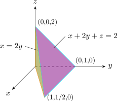
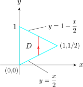
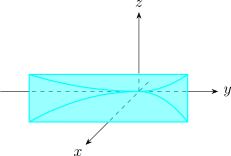
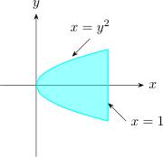

3.11 Applications Of Triple Integrals
Recall: \(\displaystyle {f(x)\geq 0\hspace {0.3cm} \int ^b_a f(x)dx = }\) are under curve
\(\displaystyle { f(x,y)\geq 0\hspace {0.4cm} \iint f(x,y) dy dx= }\) volume
\(\displaystyle {f(x,y,z) \geq 0\hspace {0.4cm} \iiint f(x,y,z)dV}\) hypervolume \(4D\)
where \(f(x,y,z) = 1\) for all points in \(E\), the triple integral represents the \[\text {Volume}\hspace {0.2cm} = \iiint \limits _E dV\]
Use the triple integral to find the volume of the tetrahedron \(T\) bounded by the planes \[x+2y + z = 2\hspace {0.2cm} , \hspace {0.3cm} x = 2y\hspace {0.3cm} x = 0\hspace {0.3cm} ,\hspace {0.3cm} z = 0\]


\[E =\Big \{ (x,y,z) \hspace {0.1cm} \big |\hspace {0.1cm} 0 \leq x \leq 1\hspace {0.1cm}, \hspace {0.1cm} \frac {x}{2}\leq y \leq 1 - \frac {x}{2}\hspace {0.1cm} , \hspace {0.1cm} 0 \leq z \leq 2 - x - 2y\Big \}\]
\begin {align*} V(T) & = \iiint \limits _TdV\\ & = \int ^1_0\int ^{1-x/2}_{x/2} \int _0^{2-x-2y} dz\hspace {0.1cm}dy\hspace {0.1cm}dx\\ & = \frac {1}{3}\\\\ \end {align*}
If \(\rho (x,y,z)\) is the density over \(E\) \[\text {Mass}\hspace {0.2cm} = \iiint \rho (x,y,z)\hspace {0.1cm}dV\]
Moments about the three coordinate planes \begin {align*} M_{yz} & = \iiint \limits _E x\hspace {0.1cm} \rho (x,y,z)\hspace {0.1cm}dV\\\\ M_{xz} & = \iiint \limits _E y\hspace {0.1cm} \rho (x,y,z)\hspace {0.1cm}dV\\\\ M_{xy} & = \iiint \limits _E z\hspace {0.1cm} \rho (x,y,z)\hspace {0.1cm}dV\\\\ \end {align*}
Find the centre of mass of a solid of constant density that is bounded by the parabolic cylinder \[x= y^2\hspace {0.3cm}, \hspace {0.3cm} z = 0\hspace {0.3cm} , \hspace {0.3cm} x = z\hspace {0.3cm} , \hspace {0.1cm} x = 1\]
\[\overline {X} = \frac {M_{yz}}{M}\hspace {0.3cm},\hspace {0.3cm} \overline {Y}= \frac {M_{xz}}{M}\hspace {0.3cm} , \hspace {0.3cm} \overline {Z} = \frac {M_{xy}}{M}\]
|  |  |
\[E = \big \{(x,y,z)\hspace {0.1cm} \big | \hspace {0.1cm} (x,y)\in D \hspace {0.1cm} , \hspace {0.1cm} -1\leq y\leq 1\hspace {0.1cm} , \hspace {0.1cm} y^2 \leq x \leq 1 \hspace {0.1cm}, \hspace {0.1cm} 0 \leq z \leq x\big \}\]
If the density \(\rho (x,y,z) = \rho \), the mass
\begin {align*} M & = \iiint \limits _E \rho \hspace {0.1cm} dV\\ & = \int ^1_{-1}\int ^1_{y^2}\int ^x_0\rho \hspace {0.1cm} dz\,dx\,dy\\ & = \frac {4\rho }{5}\\ \end {align*}
\(M_{xz} =0\hspace {0.4cm}\therefore \hspace {0.5cm} \overline {Y} = 0\) (check symmetry)
\begin {align*} M_{yz} & = \iiint \limits _E x\hspace {0.1cm} \rho \hspace {0.1cm} dV\\ & = \int ^1_{-1}\int ^1_{y^2}\int ^x_0 x\hspace {0.1cm}\rho \hspace {0.1cm} dz\, dx\, dy\\ & = \frac {4\rho }{7}\\ \end {align*}
\begin {align*} M_{xy} & = \iiint \limits _E z\hspace {0.1cm} \rho \hspace {0.1cm} dV\\ & = \int ^1_{-1}\int ^1_{y^2}\int ^x_0z \hspace {0.1cm}\rho \hspace {0.1cm} dz\,dx\,dy\\ & = \frac {2\rho }{7}\\ \end {align*}
Centre of mass \(\hspace {0.4cm} \displaystyle {\big (\overline {X},\overline {Y}, \overline {Z}\big ) = \Bigg (\frac {5}{7}, 0, \frac {5}{14}\Bigg )}\)
Questions on this section
Stuck on something here? Ask below and it stays attached to this topic.